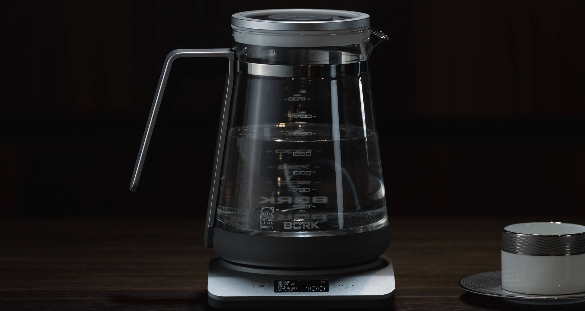

Чистящее средство для анодированного аллюминия BORK AP502
Чистящее средство BORK AP502 производится в Великобритании, с самыми высокими требованиями к качеству составляющих компонентов. Средство состоит из натуральных компонентов, которые не наносят вреда окружающей среде и используются в косметических средствах для кожи.
За счёт натуральных компонентов, очиститель бережно, но эффективно очищает жир и загрязнения с металлических поверхностей. Идеально подходит для коллекции Platinum, так как не повреждает и не окисляет анодированную поверхность. Средство также подходит для очистки любых поверхностей из нержавеющей стали.